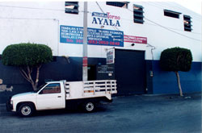
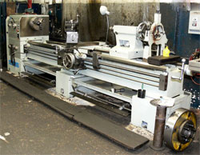

Aquí en Taller de Torno “Ayala” contamos con una vasta experiencia a su servicio, ya que fue fundado en los 1950’s por Mario Ayala Gómez y con más de 35 años en su sitio actual operado por el Ing. Mario A. Ayala M.
Estamos a sus órdenes para trabajos de mantenimiento y fabricación para maquinaria agrícola, industrial, construcción, montacargas y partes automotrices (flechas cardan, ejes traseros y delanteros, etc). Todo esto con una completa gama de maquinaria y herramientas que incluyen tornos, torno CNC, cepillo, taladro, prensa, fresadora, perfiladora y soldadura de varios tipos.
Se cuenta con operadores experimentados y esperando brindarle la mejor atención, que esta se adecue a sus necesidades para que usted quede conforme y contento por nuestros servicios. Además contamos con servicio a domicilio Esperamos poder servirle pronto.
 